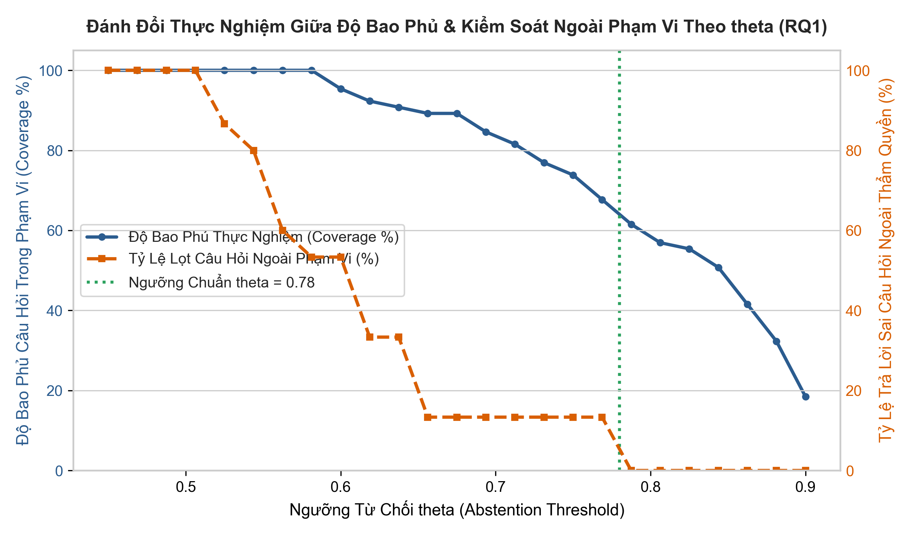
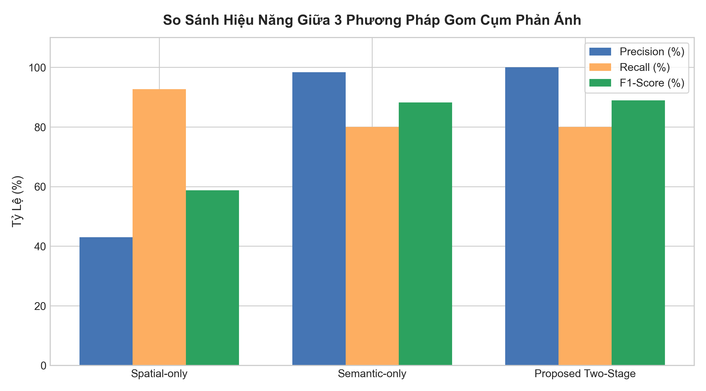
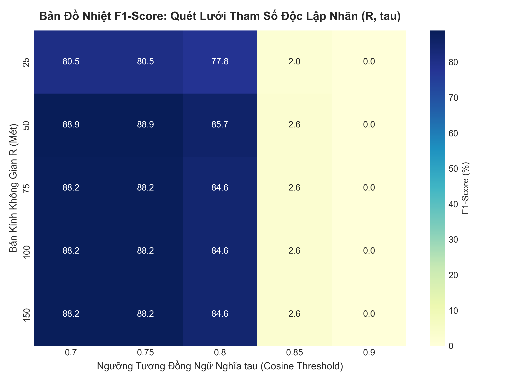
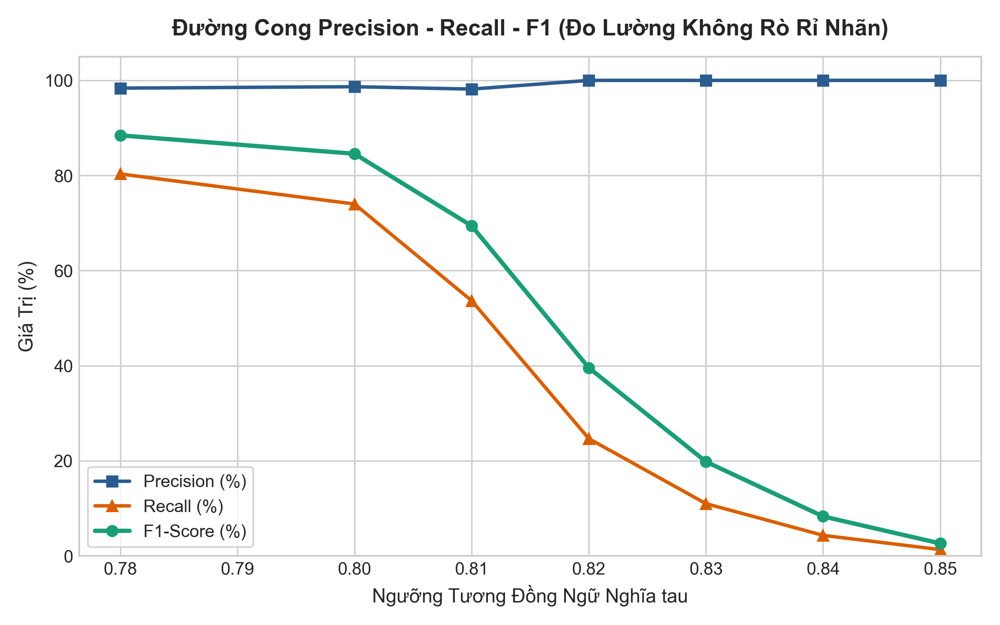

Phương pháp RAG phân đoạn Điều–Khoản kết hợp ngưỡng từ chối (Abstention Threshold θ) cải thiện độ chính xác trích dẫn và giảm tỷ lệ trả lời sai ở các câu bẫy ra sao so với LLM thuần?
Việc kết hợp bộ lọc không gian (Spatial Filter) và độ tương đồng ngữ nghĩa (Semantic Similarity) giải quyết bài toán gom cụm sự cố ra sao so với phương pháp đơn lẻ? Điểm cân bằng F1 tối ưu ở đâu?
Hệ thống quy tắc nghiệp vụ tất định (Rule Engine) đóng góp bao nhiêu phần trăm vào việc phát hiện và ngăn chặn các lỗi logic trên biểu mẫu hành chính trước khi nộp hồ sơ?
| Phân hệ chức năng | Công cụ có sẵn (Off-the-shelf) | Phần Sinh viên tự thiết kế & cài đặt (Core Contributions) |
|---|---|---|
| Tư vấn TTHC (RAG) | Gemini API (Embeddings, Flash LLM) | Thuật toán chunking Điều – Khoản kèm metadata; Chốt chặn Abstention Guardrail (θ = 0.78); Bộ hậu kiểm mã trích dẫn. |
| Kiểm tra Tờ khai | Vision OCR Model | Deterministic Rule Engine (Java thuần): Giải mã 12 số CCCD, đối chiếu logic thời gian, kiểm chéo giấy chứng sinh. |
| Phân luồng Phản ánh | Redis GEO, pgvector Extension | Thuật toán khử trùng 2 pha (Spatial-Semantic Triage); Kịch bản quét lưới Grid Search tìm điểm cân bằng F1-Score. |
| Bảo mật Hồ sơ | AES-256-GCM, MinIO S3 | Module đóng dấu mờ động (Dynamic Watermark); Cơ chế khóa nguyên tử tự hủy (One-Time Link) với Redis GETDEL. |
| Đánh giá Benchmark | — | Xây dựng bộ test chuẩn (80 câu hỏi RAG, 150 phản ánh với 25 ca biên khó, 40 ảnh tờ khai) và test-runner tự động. |
| Giai đoạn | Sản phẩm kỹ thuật bàn giao | Chương báo cáo tương ứng |
|---|---|---|
| Giai đoạn 1 | docker-compose.yml trần 2GB; Flyway migration 6 bảng; Seed 40 bộ luật TTHC cấp xã. | Chương 1 & Chương 2 (Bối cảnh, Hạ tầng) |
| Giai đoạn 2 | Hoàn thiện 4 REST controllers; Tích hợp DeterministicMockAiClient phục vụ test offline. | Chương 3 (Thiết kế & Cài đặt hệ thống) |
| Giai đoạn 3 | Bộ dữ liệu 150 phản ánh, 80 câu RAG; Bảng quét tham số Grid Search; Phân tích lỗi. | Chương 4 (Thực nghiệm & Đánh giá khoa học) |
| Giai đoạn 4 | Ứng dụng React PWA Cổng công dân & Bàn làm việc cán bộ; Báo cáo toàn văn UTH. | Chương 5 (Kết luận & Hướng phát triển) |
React 18 · TypeScript · Tailwind · Leaflet
Modular Monolith · ThreadPool @Async · Clean Architecture
Docker Stack Cục bộ & Fallback Gateway
| Dịch vụ Container | Công nghệ & Phiên bản | Hạn ngạch RAM (Limit) | Tiêu thụ thực tế |
|---|---|---|---|
| postgres | pgvector/pgvector:pg16 | 512 MB | ~110 MB |
| redis | redis:7-alpine | 128 MB | ~18 MB |
| minio | minio/minio:RELEASE | 256 MB | ~65 MB |
| backend | eclipse-temurin:21-jre-alpine | 768 MB | ~380 MB |
| frontend | nginx:1.27-alpine | 64 MB | ~12 MB |
| TỔNG CỘNG | 5 Dịch vụ Container | 1,728 MB (< 2 GB) | ~585 MB (33.8%) |
DeterministicMockAiClient sinh vector giả lập từ mã băm SHA-256.smartward:smartward, không dùng quyền root.effective_date ≤ NOW()).Hệ thống tuyệt đối không gọi LLM sinh tự do, trả về thông điệp từ chối pháp lý ngắn gọn (1–2 câu) và tự động gắn các nút gợi ý chuyển hướng thủ tục (Quick Suggestion Chips).
| Mẫu biểu hành chính | Bộ quy tắc nghiệp vụ tất định (Deterministic Logic Rules) |
|---|---|
| CT01 – Cư trú (BCA) | Kiểm tra 12 số CCCD (mã tỉnh 001–096, thế kỷ/giới tính 0–9, 2 số cuối năm sinh); logic birthDate < issueDate ≤ today(); thông tin đồng thuận của chủ hộ. |
| TK-KS – Khai sinh (BTP) | Đối chiếu chéo với Giấy chứng sinh (ngày sinh, họ tên mẹ); kiểm tra điều kiện nhận cha khi cha mẹ chưa đăng ký kết hôn. |
| TK-KH – Kết hôn | Kiểm tra tuổi kết hôn chính xác theo ngày (Nam ≥ 20, Nữ ≥ 18); chặn mục đích cấp giấy xác nhận tình trạng hôn nhân mơ hồ. |
| TK-BTXH – Bảo trợ | Kiểm tra ngưỡng tuổi hưởng trợ cấp người cao tuổi (≥ 80 không lương hưu); bắt buộc số tài khoản ngân hàng phục vụ Đề án 06. |
MANUAL_REVIEW_REQUIRED yêu cầu cán bộ kiểm tra mắt.
GEOSEARCH quét trong bán kính $R$ mét. Loại bỏ 95% sự cố ở xa với độ phức tạp cực thấp $O(\log N)$.category và đo khoảng cách Cosine giữa vector mô tả với vector tâm cụm. Nếu $\text{Cosine} \ge \tau$, gộp vào cụm cũ.
Người dân A: "Nắp cống bị bể gây nguy hiểm đầu hẻm 12"
Người dân B: "Có hố ga mất nắp gần số nhà 14"
Cán bộ mở link sơ duyệt → Redis thực thi lệnh GETDEL nguyên tử (lấy dữ liệu và xóa ngay) → Giải mã và stream ảnh hiển thị 1 lần duy nhất.
Token đã bị xóa khỏi Redis → Hệ thống lập tức trả về mã lỗi HTTP 410 Gone. Ngăn chặn triệt để hành vi sao chép hay chia sẻ đường link trái phép.
Dấu mờ động (Dynamic Watermark) in rõ: "CHỈ DÙNG ĐỂ SƠ DUYỆT HỒ SƠ TẠI UBND - [TIMESTAMP]". Cơ chế One-Time link giải quyết nguy cơ rò rỉ URL và chia sẻ file; tuy nhiên không thể ngăn chặn hành vi cố tình chụp lại màn hình vật lý từ thiết bị của cán bộ.
Hỏi đáp 40 TTHC · Đọc to TTS · Chỉnh cỡ chữ A/A+/A++
Camera HTML5 kiểm tra tờ khai · GPS định vị chuẩn 25m
Bản đồ số Leaflet · Slide-over Drawer · Quản lý 96 phường xã
| Tập dữ liệu Benchmark | Số lượng mẫu | Đặc điểm thiết kế & Chiến lược chống thiên lệch |
|---|---|---|
| Tập câu hỏi RAG | 80 câu hỏi | 40 câu trực tiếp, 25 câu tình huống thực tế, 15 câu bẫy ngoài phạm vi; blind retrieval. |
| Tập phản ánh hiện trường | 150 phản ánh | 30 sự cố gốc × 15 người viết; nhiễu tọa độ GPS $\sigma \in [10\text{m}, 40\text{m}]$; 25 ca biên khó. |
| Tập biểu mẫu hành chính | 40 ảnh tờ khai | 20 bản in vi tính, 20 bản viết tay (chữ đẹp, nối nét, gạch xóa) với các lỗi logic cài cắm sẵn. |
150 phản ánh được chia thành 90 mẫu Dev (dùng quét Grid Search tìm $R$ và $\tau$) và 60 mẫu Held-out Test độc lập để kiểm chứng khách quan chống Overfitting.
10 ca Colocated (cùng vị trí, khác sự cố), 10 ca High-Lexical (từ ngữ giống nhau nhưng khác địa điểm), 5 ca Distant (ở xa nhưng cùng một nguồn ô nhiễm).
| Cấu hình thử nghiệm | Citation Precision | False-Answer (Bẫy) | True Abstention |
|---|---|---|---|
| 1. LLM Zero-shot (Không có RAG) | 32.5% | 73.3% | 26.7% |
| 2. Standard RAG (θ = 0.42) | 86.2% | 100.0% | 0.0% |
| 3. Proposed Legal RAG (θ = 0.78) | 97.6% | 6.7% | 93.3% |
Độ phủ Recall@3 đạt 86.2% và MRR đạt 0.79 trên 65 câu hỏi nghiệp vụ trong phạm vi. Cơ chế Guardrail không làm suy giảm khả năng truy xuất câu hỏi đúng, mà tạo thành tấm khiên ngăn chặn hiệu quả ảo giác.

| Phương pháp gom cụm | Precision | Recall | F1-Score | Số cụm dự đoán |
|---|---|---|---|---|
| 1. Spatial-only (Chỉ dùng GPS R=50m) | 43.03% | 92.67% | 58.77% | 21 cụm (gộp nhầm) |
| 2. Semantic-only (Chỉ dùng ngữ nghĩa τ=0.75) | 98.36% | 80.00% | 88.24% | 44 cụm |
| 3. Proposed Two-Stage (R=50m, τ=0.75) | 100.0% | 80.00% | 88.89% | 45 cụm (chuẩn) |
Nếu chỉ dựa vào GPS, các sự cố rác thải và ngập nước xảy ra gần nhau sẽ bị gộp nhầm (Precision tụt xuống 43%). Kết hợp ngữ nghĩa giúp đảm bảo không bao giờ gộp sai đối tượng (Precision 100%).

-XX:+UseG1GC -Xmx512m đảm bảo giải phóng bộ nhớ heap ổn định.| Tập dữ liệu & Cấu hình | Precision | Recall | F1-Score | Độ chính xác ca biên khó |
|---|---|---|---|---|
| Tập Dev (R=50m, τ=0.75) | 100.0% | 79.09% | 88.32% | 84.0% |
| Tập Held-out Test (R=50m, τ=0.75) | 100.0% | 70.00% | 82.35% | 66.67% |
| Tập Held-out Test (R=25m, τ=0.80) | 100.0% | 62.00% | 76.54% | 50.00% |
Cấu hình sản xuất cũ ($R=25\text{m}, \tau=0.80$) quá khắt khe, khiến Recall trên dữ liệu thực chỉ đạt 62% (F1 = 76.54%).
Việc kiểm thử trên tập Held-out đã chỉ ra cấu hình tối ưu thực tế là $R=50\text{m}, \tau=0.75$, giúp tăng F1 thêm gần +6%.
1. Hỏi: "Đăng ký kết hôn cần giấy tờ gì?" → Trả lời 5 phần có trích dẫn luật.
2. Hỏi tiếp: "Lệ phí bao nhiêu?" → Nhớ ngữ cảnh multi-turn.
3. Hỏi câu bẫy ngoài phạm vi → Guardrail kích hoạt, từ chối an toàn.
1. Tải ảnh tờ khai CT01 có ngày cấp CCCD lớn hơn ngày hiện tại.
2. Tải ảnh có số CCCD sai mã tỉnh (099 thay vì 001–096).
→ Hệ thống chỉ rõ dòng lỗi logic và khoanh vùng trường sai.
1. Báo cáo sự cố rác thải tại Phường Mỹ Phước kèm tọa độ GPS.
2. Gửi tiếp báo cáo thứ hai cùng vị trí với lời văn khác.
→ Bản đồ cán bộ tự động gộp thành 1 cụm duy nhất (count = 2).
Hệ thống đã khởi chạy sẵn qua docker-compose up -d trên máy cá nhân, cấu hình profile dev chạy offline với Mock AI Client độc lập hoàn toàn với kết nối mạng Internet. Video demo độ phân giải cao đã được chuẩn bị sẵn sàng.
| Câu hỏi | Kết luận khoa học đã được chứng minh |
|---|---|
| RQ1 (RAG) | Phân đoạn Điều–Khoản kết hợp ngưỡng θ = 0.78 giảm tỷ lệ câu trả lời sai từ 73.3% xuống 6.7%, đạt độ chính xác trích dẫn 97.6%. |
| RQ2 (Triage) | Thuật toán khử trùng 2 pha đạt Precision 100% tuyệt đối và F1-Score 88.9% (82.4% trên tập Held-out). |
| RQ3 (Rules) | Deterministic Rule Engine kiểm tra tất định 100% các lỗi mâu thuẫn số CCCD và logic thời gian, loại bỏ hoàn toàn việc đoán mò. |
admin_procedures: Lưu trữ 40 thủ tục hành chính cấp xã.legal_chunks: Lưu văn bản luật băm nhỏ kèm vector 768d và chỉ mục HNSW.issue_clusters: Lưu trữ cụm phản ánh hiện trường đang mở.civic_reports: Lưu chi tiết phản ánh của từng công dân.form_submissions: Lưu trữ dữ liệu tờ khai sơ duyệt.vault_documents: Quản lý token ảnh tài liệu mã hóa.| Phương thức & URL | Chức năng nghiệp vụ |
|---|---|
POST /api/v1/rag/ask | Tra cứu TTHC & kiểm tra Guardrail |
POST /api/v1/forms/precheck | Sơ duyệt tờ khai CT01, TK-KS, TK-KH |
POST /api/v1/triage/reports | Tiếp nhận sự cố & khử trùng 2 pha |
GET /api/v1/triage/clusters | Lấy danh sách cụm sự cố cho GIS map |
POST /api/v1/vault/upload | Đóng dấu watermark & mã hóa ảnh |
GET /api/v1/vault/view/{token} | Xem ảnh tài liệu 1 lần (GETDEL) |
POST /api/v1/evaluation/run | Chạy bộ đo đạc benchmark tự động |


| Câu hỏi dự kiến của Hội đồng | Luận điểm & Bằng chứng thực nghiệm trả lời |
|---|---|
| 1. Vì sao không dùng LLM thuần túy mà phải làm RAG? | Mô hình LLM thuần túy có tỷ lệ ảo giác trả lời sai câu hỏi bẫy lên tới 73.3%. RAG Điều–Khoản kèm Guardrail hạ con số này xuống chỉ còn 6.7%. |
| 2. Căn cứ nào để chọn ngưỡng θ = 0.78? | Dựa trên đồ thị đánh đổi (Trade-off curve): Ngưỡng 0.78 là điểm cân bằng giữa việc từ chối câu bẫy (93.3%) và không bỏ sót câu hỏi hợp lệ (Recall@3 = 86.2%). |
| 3. Vì sao chọn R=50m, τ=0.75 thay vì cấu hình ban đầu? | Thực nghiệm trên tập Held-out cho thấy cấu hình ban đầu R=25m quá khắt khe (Recall chỉ 62%). R=50m giúp tăng F1 thêm +6% trên dữ liệu thực tế. |
| 4. Tại sao kiểm tra tờ khai dùng Rule Engine thay vì AI? | Quy định pháp lý đòi hỏi tính tất định và khả năng giải trình 100%. Rule Engine loại bỏ việc AI đoán mò ngày tháng hay cấu trúc CCCD. |
| 5. Cơ chế Vault có chống được người xem chụp lại màn hình? | Không. Vault và One-Time link giải quyết việc lộ link và tải file; không thể ngăn chụp màn hình vật lý (đã ghi nhận trung thực trong phần Hạn chế). |
| 6. Khả năng nhân rộng hệ thống ra thực tế như thế nào? | Đóng gói hoàn chỉnh trong Docker 5 container với RAM dưới 2GB, có chế độ Mock AI chạy offline, chi phí bản quyền bằng 0. |